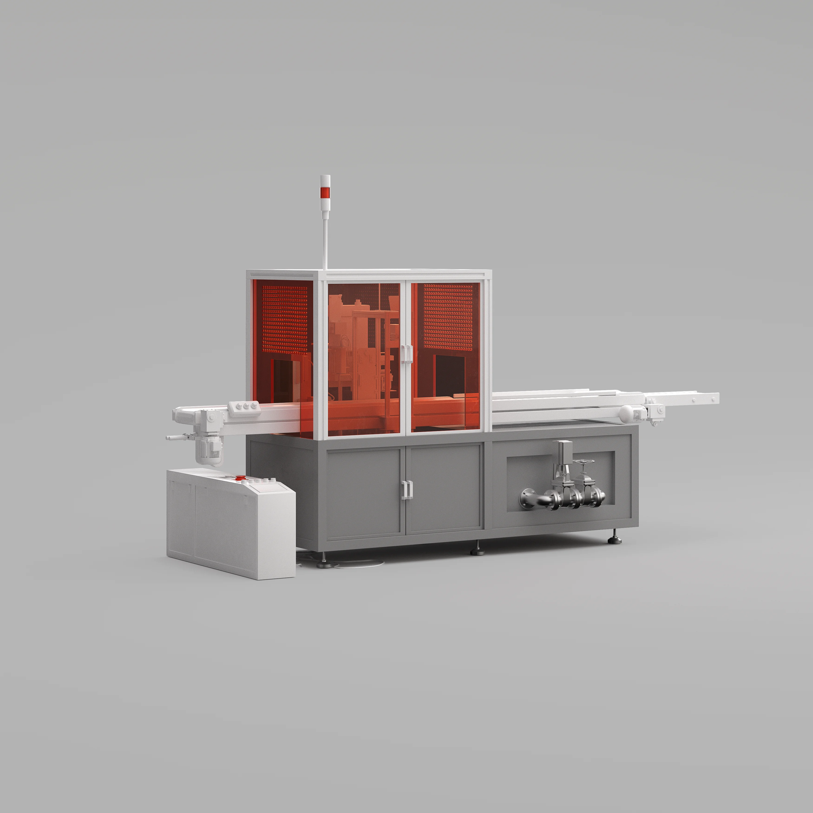

project
Breitner & Payne
1. An exploration of the commercial, residential, and business complex in the heart of Johannesburg. Navigate the development’s surroundings, step inside the units and assess available spaces.


ORBIT
PAN
ZOOM




JSON Data
The aplication receives factory data in JSON format generated from physical sensors embedded in the machines, parsed at runtime in Unreal Engine. A dedicated UE Blueprint interprets the incoming data and updates the different elements in the scene like machines status, production counts and details..
Unreal Engine Server
The application runs in Unreal Engine on a dedicated server machine. The server handles data synchronization, processes incoming JSON updates, and streams real-time factory states to connected clients, enabling remote monitoring and interaction without interrupting the main simulation.
Browser-based
The application leverages Pixel Streaming, rendering entirely on the server and streaming video output to any browser. Users interact through low-latency input forwarding, ensuring full control without requiring local processing power, making it accessible on any device with no client-side load.
Control App
The phone web-app serves as a companion tool, offering a real-time overview of the factory’s operations with key metrics, machine statuses, and production insights. In addition to monitoring, it allows users to adjust select factory parameters on the go, providing a streamlined and accessible control interface.


Other projects